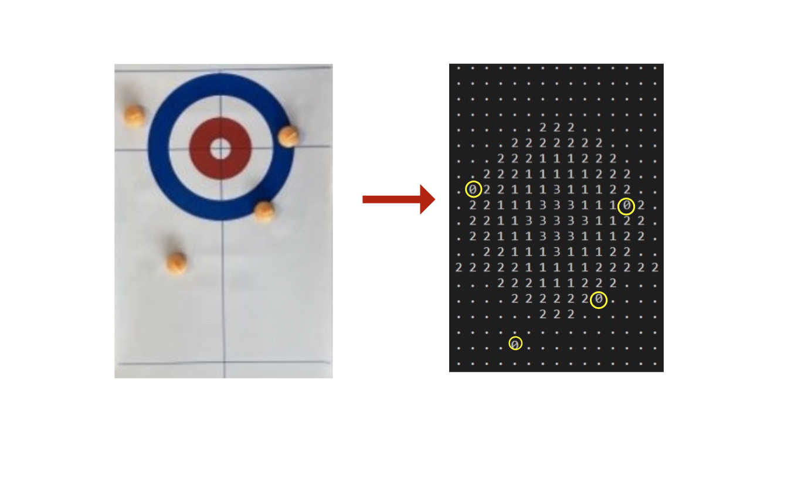
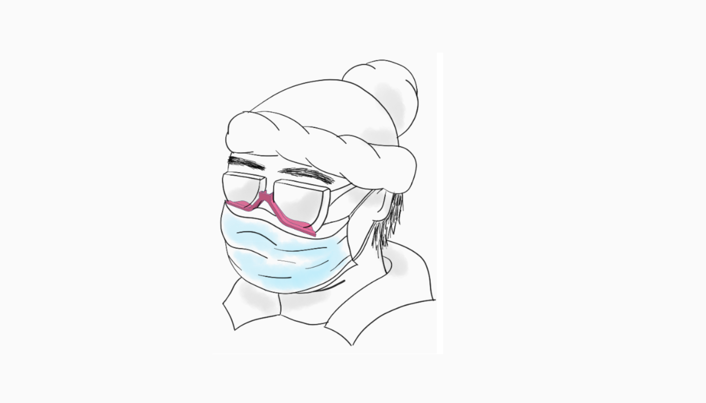
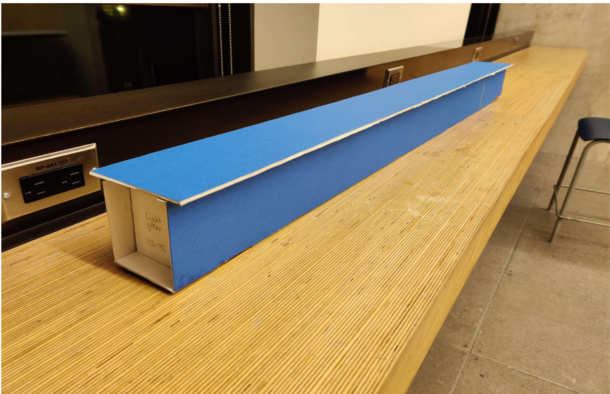
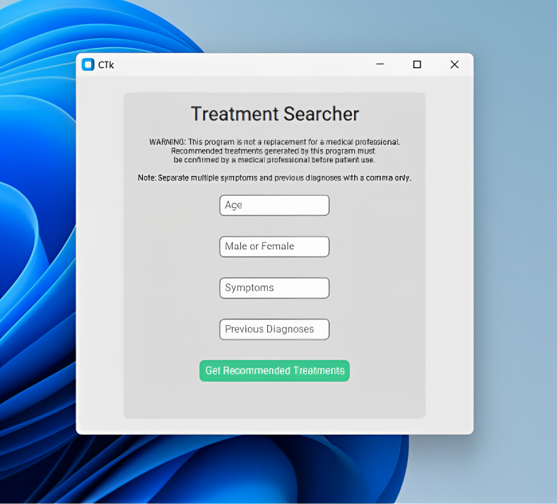

Explore my engineering design projects, demonstrating problem-solving skills and innovative thinking. As a UofT Engineering student, I have worked on four captivating projects, showcasing expertise, fostering creativity, and gaining valuable insights into innovative product design. Witness my dedication and passion for engineering!

During my Praxis II course project at UofT Engineering Science, me and my four other teammates developed an innovative device for blind individuals to participate in curling independently. The device includes an input camera, stone detection using OpenCV software, audio output, and a tactile map remote. With real-time feedback on shot types and stone positions, our solution fosters greater inclusivity in the game, making curling more accessible and enjoyable for the blind community.

During my Praxis project, my team and I created the "VisionVapor Stopper," a clip that prevents glasses from fogging up when wearing a mask. By redirecting airflow from the lenses, it ensures clear vision and enhances comfort for wearing glasses and masks. Our user-friendly accessory offers a hassle-free solution, allowing individuals to go about their activities without worrying about foggy lenses. The "VisionVapor Stopper" exemplifies our commitment to innovative solutions for challenges.

During my CIV102 course project, my team and I designed and built a small-scale box girder bridge using matboard. The goal was to create a bridge that could support the maximum load while matching the estimated failure load. We used MATLAB for iterative calculations to find the best bridge geometry. The final bridge successfully supported over 400 N of load, showcasing our teamwork and problem-solving skills. It was a hands-on application of engineering knowledge, reinforcing the value of collaborative design processes.

As part of STEM Fellowship National Inter-University Big Data Challenge 2023, my team developed a global-level predictive model for undiagnosed diseases. Using data from 211 patients in the Harvard Medical School Undiagnosed Diseases Network (UDN) database, we achieved an 88% accuracy in suggesting treatments. Our success highlights the model's potential as a diagnostic tool for personalized treatment. Further research is needed to enhance patient care.